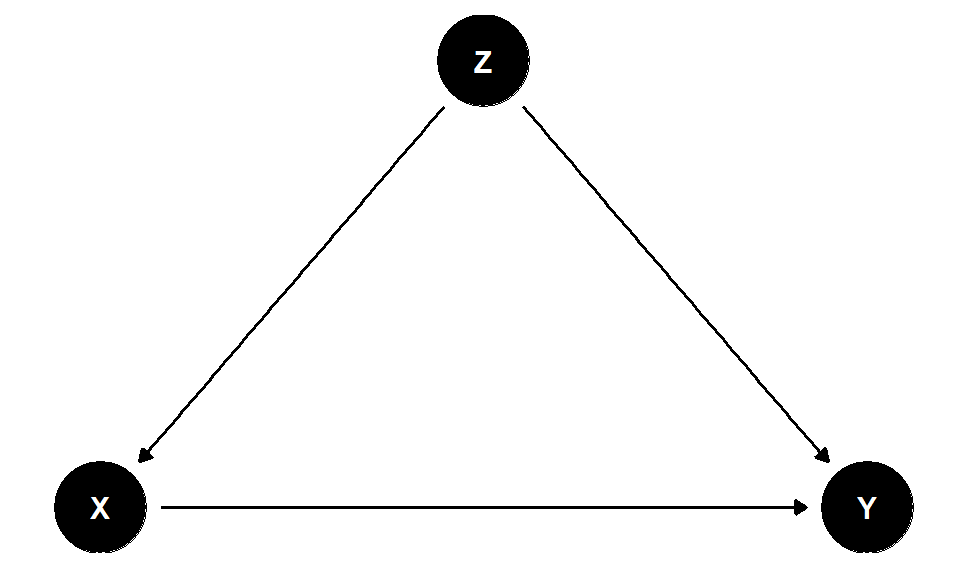
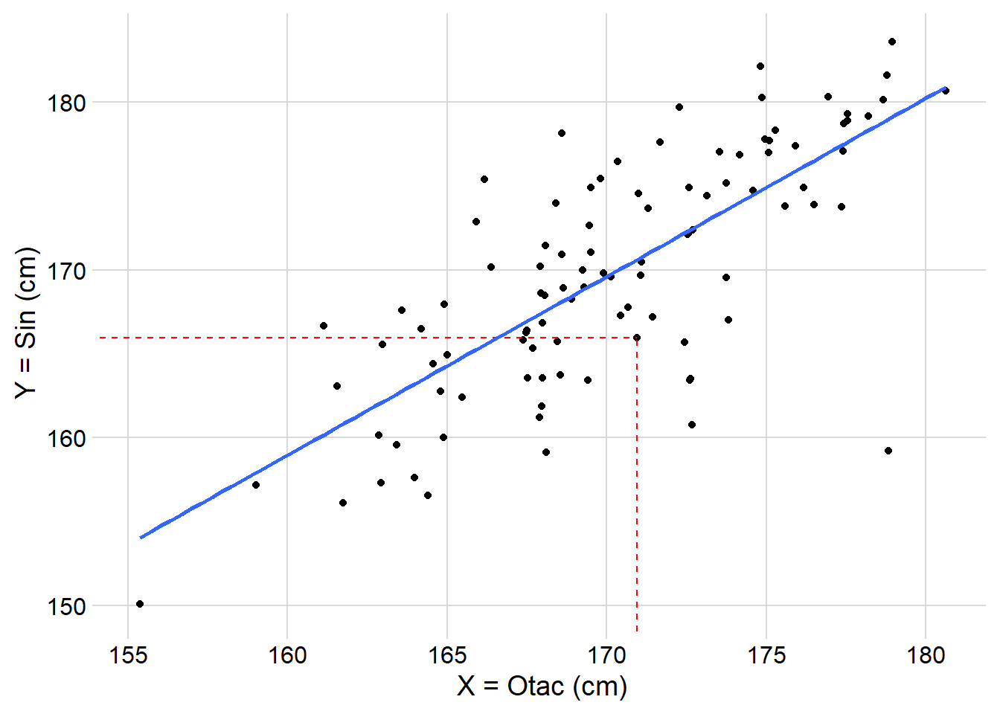
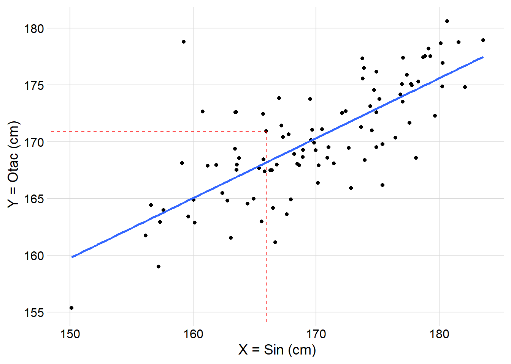
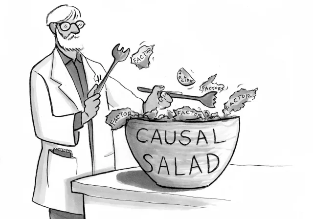
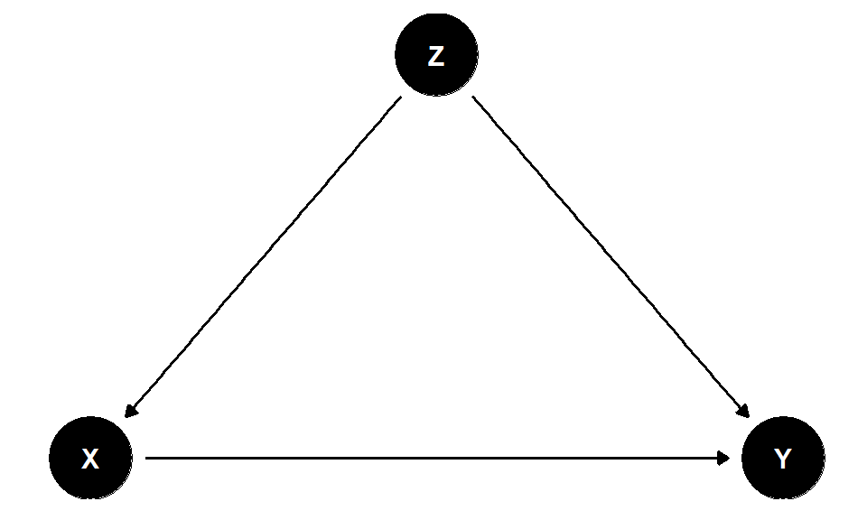
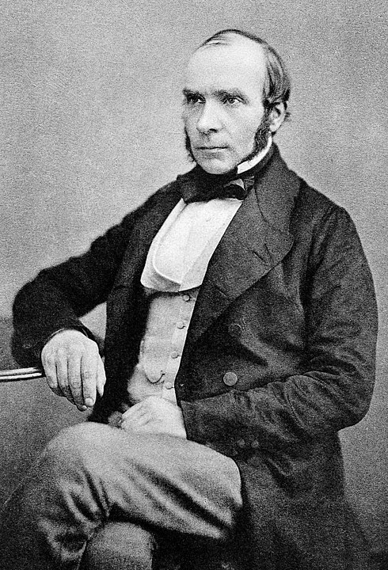

Z). Strelice pokazuju tok informacija iz jedne varijable u drugu.7/08/2023
Eksperiment je do skoro bio jedini način da se ispitaju prirodni fenomeni, ekskluzivno dostupan samo naukama koje mogu lako da ih izvode. Istraživač koji bi hteo da ispita prirodu neeksperimentalnim metodama (zato što je izvođenje eksperimenta neetičko ili nemoguće) je bio ograničen na ispitivanje korelacija. Kada u prirodi vidimo dve stvari koje se dešavaju zajedno, ne možemo zasigurno znati koja uzrokuje koju, niti da li su uopšte povezane (takođe, postoje uzroci koji uopšte nisu korelisani).1 Svet medicine, a i nauke njoj sličnoj, bile su ograničene na tvrdnje asocijacija. Naučnici su želeli da kažu \(A\) uzrokuje \(B\) (\(A\rightarrow B\)), ali nisu smeli, jer su takve tvrdnje bile prejake za statističke metode. Medicinska literatura je prepuna reči koje izbegavaju uzročne tvrdnje — kao što su: veza, asocijacija, korelacija, značajna povezanost (Hernán 2018). Ispostavlja se da je sasvim moguće samo posmatranjem doći do uzroka stvari. Kako možemo bez ikakvog intervenisanja, tj. samo gledanjem prirode doći do zaključaka šta bi se desilo da zapravo uradimo nešto? Kako je tako nešto moguće?
Ono što čoveka najviše razlikuje od životinja je sposobnost da zamisli bliske moguće svetove. Bliski mogući svetovi su odgovori na pitanje: “Šta bi bilo, kad bi bilo?” Tokom evolucije, bliski pretci modernog čoveka su stekli sposobnost da komuniciraju ideje i sarađuju na sve kompleksnije načine. Šta god da je dovelo do ove prosocijalne pojave, dalo je čoveku mogućnost da zamisli nepostojeće — uz koju je došla i sposobnost planiranja. Pearl и Mackenzie (2018) u svojoj knjizi opisuju tri stepenika kognitivnog razmišljanja u zavisnosti od toga na kakva pitanja ono može dati odgovor.
Prvi stepenik – Asocijacije
Šta ako vidim?
Primer: Ako pacijent ima ovaj simptom, on mi govori da…?
Drugi stepenik – Intervencija
“Šta ako uradim?”
Primer: Da li će me proći glavobolja ako uzmem aspirin?
Treći stepenik – Kontračinjenice (eng. counterfactual)
“Šta da sam uradio? Zašto?”
Primer: Da li mi je aspirin zaustavio glavobolju?
Ako se velika većina istraživanja bazira na asocijacijama. Posledica takvog istraživanja je da niko ne može pretpostaviti šta će se desiti ako uzmemo i uradimo nešto. To je ogroman problem. Skoro smo u Beogradu imali veliko nevreme. Vetar je doslovno odnosio krovove. Te dve stvari je svako mogao da primeti (prvi stepenik, asocijacija; \(\rho = \text{corr}(vetar, odnošenje\,krova)\)), međutim ako bi se neko popeo na svoj krov i počeo da baca crepove, ma koliko se trudio ne bi prizvao vetar (kauzalna strelica ide \(vetar \rightarrow odnošenje \,krova\), a ne suprotno). Koncept kauzalne strelice ćemo dodatno istražiti u narednim poglavljima, pogotovo kada budemo pričali o kauzalnim dijagramima. Jedno po jedno.
Kauzalno, uzročno-posledično zaključivanje, je pravi naučni cilj. Ponekad je dobro imati predviđanja, ali uglavnom ono što želimo je da razumemo fenomen kako bismo mogli da intervenišemo tj. promenimo nešto. Produžimo životni vek, sprečimo bolest, smanjimo rizik, planiramo projekat, itd. U tom slučaju ne možemo vršiti zaključivanja uz pomoć prvog stepenika, već pričamo o drugom stepeniku — intervencijama. Tad nas korelacije mogu zavarati. Treba nam način da otkrijemo kako su stvari zapravo povezane, a da se ne zavaravamo lažnim asocijacijama. Interesantno je kako je Francis Galton (1822-1911), Britanski učenjak, u svojoj potrazi za uzrocima, nabasao prvo na korelaciju (\(\rho\)). Tim putem moramo proći i mi.
Francis Galton je tražio uzročno objašnjenje naslednosti visine ljudi.2 Elem, Galton je primetio da viši očevi imaju prosečno više sinove, ali ne više od sebe. Sinovi niskih očeva bili su, u proseku, niži ali ne niski kao svoji očevi (Figura 1 (a)). Galton je ovaj fenomen nazvao “regresija ka mediokritetu.”3 Regresija ka proseku (kako je danas poznata) je statistička pojava prisutna svuda oko nas — u tom trenutku Galton je nije prepoznao, već je mislio da je nabasao na zakon nasleđivanja. Do 1889. je shvatio da je zapravo otkrio korelaciju, a da je regresija ka proseku posledica sreće (\(Visina = Prava\,visina + sreća\)). Zapravo postoje dve regresione linije (Figura 1 (a) i Figura 1 (b)). Obe linije predviđaju jednako dobro. Jednačine regresionih linija su različite, ali je situacija potpuno simetrična. Regresija ka proseku ne može biti uzrok jer ne razlikuje nikakav redosled događaja. Dve varijable (visina očeva i sinova) su korelisane ako jedna “predviđa” drugu, a koeficijent korelacije je veći što su obe varijable bliže pravoj liniji. U slučaju savršene korelacije (\(\rho = 1\)) između visine očeva i njihovih sinova, svaki dodatni centimetar visine oca bi deterministički bio prenesen na sina, što nije slučaj.


Galton je otkrio objektivnu meru povezanosti dve varijable. Kasnije će njegov učenik Karl Pirson definisati Pirsonov koeficijent (\(\rho\) ili \(r\)) koji je dobro poznat svakom naučniku. Insistiranje na korišćenju korelacija zarad neke fiktivne “objektivnosti” je unazadilo nauku desetinama godina. Prodaja sladoleda je korelisana sa stopom kriminala, ali nikad ne bismo izmislili priču da objasnimo kako prodaja sladoleda utiče na kriminal — jasno nam je da su slučajno povezani. Korelacije ne govore ništa o uzrocima. Mogu poslužiti u predviđannjima, ali nemaju nikakvu eksplanatornu vrednost. Zaključivanje o intervencijama je nepouzdano. Provlačenjem kroz skupštinu zakona o zabrani prodaje sladoleda, ne bismo smanjili kriminal.
Zašto su prodaja sladoleda i kriminal povezani; gde se kriju uzroci?
Konfaunder, od Latinskog confundere, što znači “umešano”, je varijabla čiji efekat utiče na izloženost i ishod, stvarajući lažnu asocijaciju. Na primer, ako procenjujemo efekat leka na bolest (\(Lek \rightarrow Bolest\)), ali nam je kontrolna grupa starija od ispitne, \(Starost\) postaje konfaunder (\(Lek \leftarrow Starost \rightarrow Bolest\)) — ispitivač je sam stvorio lažnu asocijaciju. Svaki uticaj \(Leka\) sad će biti lažno izmenjen uticajem \(Starosti\). Srećom, ako smo prikupili podatke o starosti pacijenata, lako možemo raspetljati neželjene efekte treće varijable od \(Leka\).
Regresijom povlačimo najbolju liniju kroz oblak podataka. Za objašnjenje (\(X\)) i ishod (\(Y\)), jednačina regresione linije bi izgledala: \(Y = aX + b\). U tom slučaju, jedna jedinica povećanja \(X\) će, u proseku, povećati \(Y\) za \(a\)-jedinica. Ako nema nikakvih konfaundera onda je to procena naše intervencije. Ukoliko postoji neka treća varijabla, onda \(a\) daje prosečan trend, tj. korelaciju, a ne kauzalni efekat. Ako pretpostavimo da imamo konfaunder \(Z\), onda varijable \(X, Y, Z\) prave “oblak” u 3D prostoru, i naša regresiona linija postaje ravan \(Y = aX + bZ + c\) ukoliko uvrstimo \(Z\) u regresionu jednačinu. Ono sto koeficijent \(a\) onda predstavlja je parcijalni regresioni koeficijent “kontrolisan” za \(Z\). Tako smo uklonili neželjeni efekat \(Z\) i dobili pravi efekat \(X\) na \(Y\) (Pearl и Mackenzie 2018).
Kada znamo da je moguće kontrolisati za lažne asocijacije, da li treba da kontrolišemo za što više varijabli kako bi naši efekti bili tačniji? Nažalost, ubacivanje varijabli u regresiju bez razmišljanja nam može uništiti procenu. Retki su statistički kursevi koji uče istraživače kako da biraju kontrolne varijable, a njihovo nasumično ubacivanje može dovesti do katastrofalnih posledica. Kontrolom nekih varijabli može se dobiti pristrasna (pogrešna) procena efekta, a ponekad i kompletno obrnutog znaka, tj. smera efekta (Cinelli, Forney, и Pearl 2020).

Kauzalna salata je procedura (ne samo regresija) kojom se uzima lista varijabli i na osnovu njih vrši nekakvo kauzalno zaključivanje. Nijedna veličina uzorka neće pretvoriti salatu u smisao. Ali postoji rešenje za biranje kontrolnih varijabli, kauzalni dijagrami.
U svom radu “Da li biolozi mogu da poprave radio? — ili, šta sam naučio tokom izučavanje apoptoze,” Lazebnik (2002) govori kako su biološke nauke oštećenje manjkom formalnog pristupa biološkim sistemima. Jedan od načina da se formalizuju pretpostavke u opservacionim studijama, tj. prirodnim eksperimentima su usmereni aciklični dijagrami (eng. Directed Acyclic Graphs, DAGs). Putem ovih dijagrama mogu se predstaviti uticaji za koje naučnik smatra da su u osnovi nekog procesa (Figura 2).
Džudea Perl je popularizovao način kojim možemo opservacije (prvi stepenik) pretvoriti u randomizovane eksperimente, kako bi od njih dobili odgovore na uzročna pitanja (stepenik dva i tri). Naime, definisanjem kauzalnog dijagrama naučnik može saznati koje mu varijable trebaju da dobije odgovor na postavljeno pitanje. Jednom definisan, kauzalni dijagram eliminiše bilo kakvu zbunjenost koje kontrolne varijable treba uključiti u regresiju, a koje ne.4

Z). Strelice pokazuju tok informacija iz jedne varijable u drugu.Kauzalni dijagrami se prave naučnim razmišljanjem. Uzroci se ne mogu dobiti iz podataka bez pretpostavki. Kauzalni dijagrami su naučni model procesa koji stoji iza podataka i realizuje ih. Uz pomoć kauzalnog dijagrama naučnik može transparentno da definiše uticaje koji prožimaju fenomen koji istražuje. Interakcije u opservacionoj studiji se onda mogu transformisati u randomizovani eksperiment uz pomoć do-Računa (eng. do-Calculus)! Do-Račun je alat kojim možemo analizirati uzroke iz prirodnih eksperimenata. Mnoge vrste zaključaka nam onda postaju dostupne, kao i istraživanja naučnih pitanja za koje nije moguće napraviti randomizovani eksperiment.
Ponekad regresioni koeficijenti predstavljaju kauzalne efekte, a ponekad ne. Sve zavisi od kauzalnog dijagrama! Štaviše, ne smeju se svi regresioni koeficijenti iz jedne jednačine tretirati kao kauzalni efekti (Westreich и Greenland 2013).
Recimo da smo posmatranjem prikupili podatke o uzimanju određenog leka u populaciji. Nas zanima kako on utiče na pojavu infarkta. Takođe ćemo pretpostaviti da pol utiče na uzimanje leka, što nije nemoguća pretpostavka. Figura 3 daje potencijalni kauzalni dijagram za ovaj scenario. Savršeni randomizovani eksperiment bi jednako dodelio lek svakom polu, ali trenutno imamo dostupnu samo opservacionu studiju. Do-Račun koristi matematičku operaciju koje se obeležava sa \(do(x)\) da označi intervenciju ili kontračinjenicu. \(do(x)\) simulira fizičku intervenciju fiksiranja izabrane varijable menjajući je sa konstantom (\(X = x\)), dok ostatak kauzalnog modela ostaje nepromenjen.
Ono što mi želimo da procenimo je efekat leka na infarkt (\(Lek \rightarrow Infarkt\)) i to možemo da izrazimo sa \(P(Infarkt\,|\,do(Lek))\). Prevedeno, ovaj izraz znači: “Verovatnoća da se infarkt desio, ukoliko smo mi odredili lek.” Do-Račun nam omogućava da statistički izolujemo efekat \(Leka\) na \(Infarkt\) ukoliko nam kauzalni dijagram oslikava moguću realnost. Time smo dobili transformisali kauzalni dijagram na Figura 4, gde se jasno vidi obrisan uticaj \(Pola\) na \(Lek\).
Kriterijumi po kojim se mogu odrediti dobre kontrolne varijable, za bilo koji kauzalni dijagram su Backdoor i Front-door kriterijum.
flowchart LR Z((Pol)) --> X & Y X((Lek)) ==> Y((Infarkt)) linkStyle 2 stroke:red
Pola na Lek i Infakrt. Pol je u ovom slučaju konfaunder pošto nas zanima kauzalni efekat Leka na Infarktflowchart LR
Z((Pol)) --> Y
Z((Pol)) x-.-x X
X(("do(Lek)")) ==> Y((Infarkt))
linkStyle 2 stroke:red
Pol u Lek smo uklonili uticaj konfaundera na Lek. Sada svaka promena u Infarktu uslovljena promenom Leka odgovara kauzalnom efektu Leka.Backdoor kriterijum je pravilo o pronalaženju skupa varijabli, kontrolom kojih bi dobili izolovan efekat izloženosti \(X\) na ishod \(Y\) — drugačije napisano: \(P(Y\,|\,do(X))\). Intuitivno, blokiranjem svih alternativnih puteva (stelica) kojim je naša varijabla (\(X\)) od interesa povezana za ishodom (\(Y\)) će izolovati direktnu vezu naše varijable i ishoda (\(X \rightarrow Y\)). U tom slučaju, svaka korelacija između \(X\) i \(Y\) istovremeno odgovara efektu \(X\) na \(Y\). Pored toga što je najbitniji kriterijum, izuzetno je intuitivan i može se upotrebiti kada se dijagram analizira vizuelno. Backdoor kriterijum je primenjen na Figura 4.
Upotreba: kada smo sigurni da imamo sve podatke o velikom broju (najuticajnijih) konfaundera.
Front-door kriterijum je malo komplikovaniji. Recimo da radimo opservacionu studiju, ali ne možemo da prikupimo podatke o genu podložnosti ka infarktu (možda ne znamo da takav postoji). Ono što jesmo prikupili su podaci o \(Leku\), \(Krvnom\,Pritisku\) i \(Infarktu\). Ako pogledamo Figura 5, videćemo da \(Krvni\,Pritisak\) stoji na putu efekta \(Leka\) na \(Infakrt\). Takva varijabla se zove medijator.5 Ne možemo iskoristiti Backdoor kriterijum jer nemamo podatke o \(Infarkt\,Gen\)-u, te ga ne možemo blokirati.
flowchart LR Z((Infarkt Gen)) --> X & Y X((Lek)) ==> M((Krvni Pritisak)) M ==> Y((Infarkt)) style Z stroke-dasharray: 5 5, fill:#edffc4
flowchart LR Z((Infarkt Gen)) --> X & Y Z x-.-x M X((Lek)) ==> M((Krvni Pritisak)) M ==> Y((Infarkt)) style Z stroke-dasharray: 5 5, fill:#edffc4 linkStyle 3 stroke:blue linkStyle 4 stroke:red
Infarkt Gena i Krvnog Pritiska ne sme da postoji kako bi Front-door kriterijum bio validan. Kada se nađemo u situaciji gde je nemoguće iskoristiti Backdoor kriterijum, treba potražiti postojanje zaštićene varijable koje je medijator efekta Leka na Infarkt.Ono što možemo da procenimo je kauzalni efekat Leka na Krvni Pritisak (\(Lek\,{\color{blue}\rightarrow}\,Krvni\,pritisak\)). Za to nam ne treba nikakva kontrolna varijabla (Figura 5 pokazuje da nema strelice iz Infarkt Gena u Krvni Pritisak (\(Infarkt\,Gen \nrightarrow Krvni\,pritisak\)). Takođe, možemo da uočimo da je razlika između \(P(\text{Krvni Pritisak}\,|\,\text{Lek})\) i \(P(\text{Krvni Pritisak}\,|\,\text{Bez Leka})\), prosečan efekat Leka na Krvni Pritisak.
Figura 5 pokazuje da možemo da procenimo kauzalni efekat Krvnog Pritiska na Infarkt (\(Krvnog\,Pritiska \,{\color{red}\rightarrow}\,Infarkt\)). Upotrebom Backdoor kriterijuma možemo da blokiramo efekat Leka na Krvni Pritisak. Time smo saznali prosečan efekat prosečan efekat Krvnog Pritiska na Infarkt.
Kombinacijom ova dva efekta prostim množenjem (ukoliko je veza linearna) možemo posrednim putem da dobijemo efekat Leka na Infarkt izuzetog od genetskog uticaja Infarkt Gena. Proces izražavanja \(P(\text{Infarkt}\,|\,do\text{(Lek)})\) preko verovatnoća koje ne sadrže do-operaciju je zapravo Front-door kriterijum.
Poznata priča o Džon Snouovom zaključku da epidemija dijareje u Londonu potiče od zagađenja pijaće vode ljudskim fekalijama, a ne da je uzrokovana mijazmom (česticama lošeg vazduha) ili siromaštvom, je dobra ilustracija kauzalnog zaključivanja. Ova epidemija je odnela skoro 3,000 Života — uzrok je bilo bitno otkriti. Kako uzročnik, Vibrio cholerae, još uvek nije bio poznat Džon Snou je pred sobom imao nekoliko mogućih objašnjenja. Teorija mijazme, koje je bila popularna, tvrdila je da su uzročnik truležne čestice iz vazduha. Pumpa vode, koju je Snou ugasio, se često pominje kao ključan momenat u borbi protiv epidemije. Međutim, gašenje pumpe je jedva promenilo njen tok.

Najbitnij uvid koji je Džon Snou imao je bio kauzalne prirode. Džon Snou je primetio da su se kompanije koje snabdevaju London vodom podelile na one koje su uzimale vodu iz Temze blizu Londonskog mosta (nizvodno od kanalizacije), i one koje nisu. Ove kompanije su, izdelivši grad London u svoje mreže snabdevanja, u stvari randomizovale stanovnike grada na one koji su dobijali zagađenu vodu i one koji nisu. Ti stanovnici su bili raznolikih pozadina po bogatstvu, godinama, statusu, itd. Polozaj kompanije u kazzalnom dijagramu prikazan je na Figura 8.
Varijabla koja prirodno randomizuje opservacije naziva se instrumentalna varijabla. Takva varijabla po definiciji ispunjava Backdoor kriterijum, tj. nema nikakve sopstvene uzroke. Figura 8 pokazuje da varijabla \(Kompanija\) ispunjava sledeće:
Instrumentalna varijabla nam omogućava da uradimo isti trik kao i sa Front-door kriterijumom. Uz pomoć varijable \(Kompanija\) moguće je odrediti kauzalni efekat \(Čistoće\,vode\) na \(Dijareju\) bez kontrolisanja ili prikupljanja dodatnih podataka.
U modernom dizajnu istraživanja, namera lečenja (eng. intention-to-treat) vriši funkciju instrumentalne varijable. Kako istraživači ne mogu da kontrolišu da li će se pacijenti zapravo pridržavati dodeljene terapije, svaki procenjeni efekat terapije nakon randomizacije će biti pristrasan. Pogotovo ako ima dosta pacijenata koji odustanu od lečenja. Tako da je zapravo bolje govoriti o “efektu” dodeljivanja terapijskoj grupi. Ovo kao što možete pretpostaviti ima problema sa generalizacijom na okruženja van studije.
flowchart LR M(Mijazma, Siromaštvo,...) -.-> W & C W(Čistoća Vode) ==> C(Dijareja) WC(Kompanija) ==> W style M stroke-dasharray: 5 5, fill:#edffc4
Kompanija ima status instrumentalne varijable.Ovo je bio kratak konceptualni uvod u kauzalne dijagrame. Pisao sam članak uglavnom sebi kao podsetnik, ali možda posluži kao uvod nekom ko je zainteresovan.
Poznata mantra statistike: “Korelacija ne znači kauzalnost.” Kako stvari stoje, kauzalnost ne garantuje ni korelaciju.↩︎
Njegova motivacija je jasnija kad saznamo da je on bio prvi rođak Čarlsa Darvina. Zapravo, Galtona je zanimala naslednost inteligencije, kao i većinu tadašnjeg Britanskog noblesa opsednutog razlikama između sebe i “prostog” naroda.↩︎
Oličenje tzv. visokog društva.↩︎
Ne samo regresiju, već bilo koji proces analize. Uključujući i nelinearne metode.↩︎
Dobar primer medijativnog efekta je uticaj Vitamina C na kauzalnom putu: \(Citrus \rightarrow Vitamin\,C \rightarrow Skorbut\).↩︎
@online{n. grubor2023,
author = {N. Grubor, Nikola},
title = {Kauzalno zaključivanje je moguće iz opservacionih studija},
date = {2023-08-07},
url = {https://nikola-grubor.github.io/myblog/posts/sr/kauzalno-zakljucivanje},
langid = {sr-latn}
}